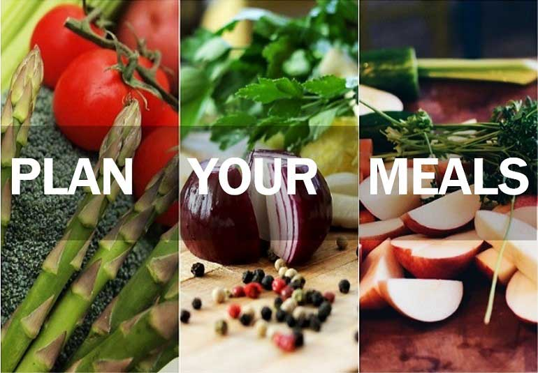
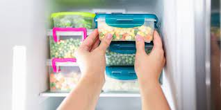
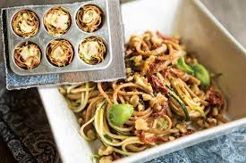

Tips to Reduce Food Waste
Here are some tips to help you reduce food waste:
- Plan your meals:
- 
When planning your meals, consider your dietary needs, preferences, and the number of people you are cooking for. Create a weekly meal plan by deciding on the dishes you want to prepare for each day of the week. This will help you stay organized and avoid last-minute decisions that may lead to excessive food purchases.
To create a shopping list, go through each recipe in your meal plan and identify the ingredients you need. Take stock of what you already have in your pantry and fridge to avoid buying duplicates. By having a clear shopping list, you can focus on purchasing only the necessary items, reducing the chances of buying excess food. - Proper food storage:
- 
Properly storing food can significantly extend its shelf life and prevent wastage. Invest in airtight containers, such as glass or BPA-free plastic containers, to store leftovers and ingredients. These containers help maintain the freshness of food and prevent moisture from entering, reducing the chances of spoilage.
Different foods have different storage requirements. For example, raw meat should be stored in the coldest part of the fridge, while fruits and vegetables may require different levels of humidity. Familiarize yourself with the specific storage requirements for different types of food and store them accordingly. Additionally, label containers with the date of storage to keep track of how long they have been in the fridge or freezer. - Get creative with leftovers:
- 
Instead of throwing away leftover ingredients or meals, get creative and find ways to repurpose them. Leftover vegetables can be used in stir-fries, soups, or omelets. Meat can be shredded and used in sandwiches or salads. Stale bread can be transformed into breadcrumbs or used in recipes like French toast or bread pudding.
By utilizing leftovers, you not only minimize waste but also save money by maximizing the ingredients you already have. Get creative with your cooking and experiment with different flavor combinations to turn your leftovers into delicious new dishes.
Composting is a sustainable way to manage food waste and create nutrient-rich soil. Instead of throwing away food scraps like vegetable peels, coffee grounds, and eggshells, start a compost pile or bin in your backyard or consider using indoor composting systems if you live in an apartment.
To create a successful compost pile, you need a mix of "green" and "brown" materials. Green materials include food scraps and grass clippings, while brown materials include dry leaves, cardboard, or newspaper. Layer these materials in your compost pile and regularly turn or aerate it to promote decomposition. Over time, the organic matter will break down into nutrient-rich compost that can be used to fertilize plants and gardens.
If you have unused or unopened food that you know you won't consume before it expires, consider donating it to local food banks or shelters. Many organizations accept non-perishable food items and can distribute them to those in need.
Before donating, check the guidelines of the organization you plan to donate to. Some may have specific requirements regarding the type of food they accept, packaging, and expiration dates. By donating excess food, you can help reduce food waste while supporting individuals or families facing food insecurity.
Impulse buying often leads to purchasing items that are not necessary, resulting in increased food waste. To avoid this, stick to your shopping list and resist the temptation to buy items on a whim. Plan your meals and create a detailed shopping list based on the ingredients you need. When you're at the store, stay focused on the items on your list and avoid aisles or sections that tempt you to buy unnecessary items.
If you find it challenging to resist impulse buying, consider shopping with a friend or family member who can help keep you accountable. Another strategy is to avoid shopping when hungry, as hunger can increase the likelihood of making impulsive food purchases.
Regularly checking the expiry dates of perishable items is essential to prevent food waste. When grocery shopping, inspect the expiration dates on items like dairy products, meats, and packaged goods. Select products with later expiration dates to give yourself more time to consume them.
In your home, organize your pantry and fridge so that items with the closest expiration dates are easily visible. This allows you to prioritize consuming those items first. When cooking, try to incorporate ingredients that are closer to their expiration dates to ensure they are used before they spoil. By staying mindful of expiry dates and using the "first in, first out" principle, you can minimize the amount of food that goes to waste.